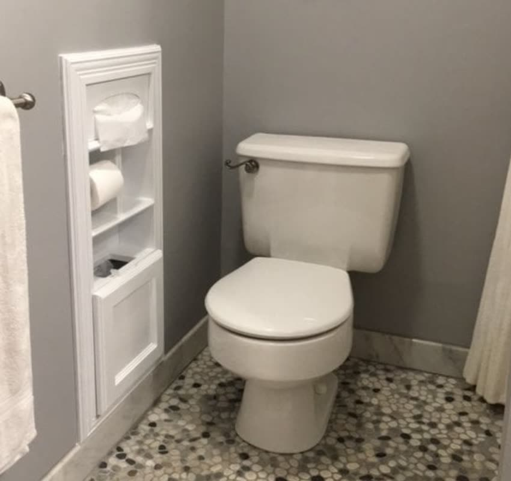
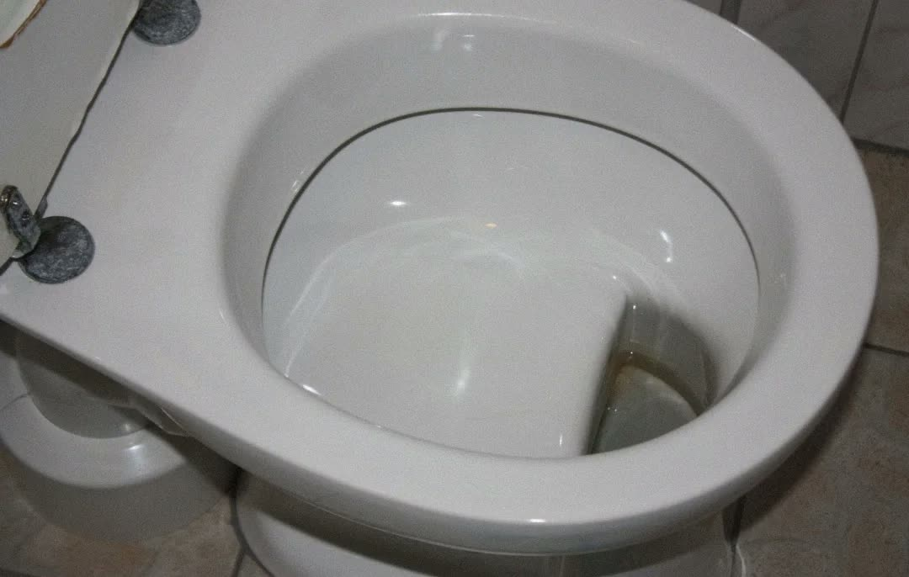
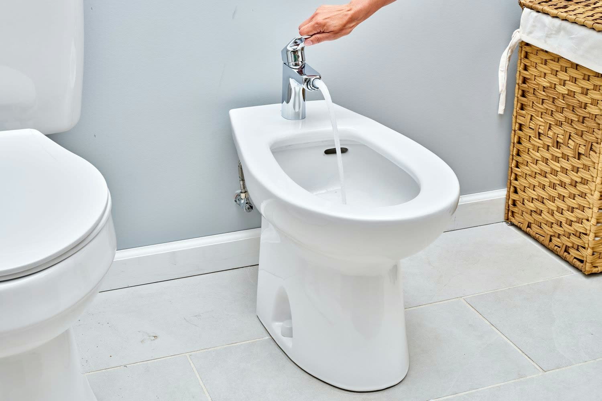
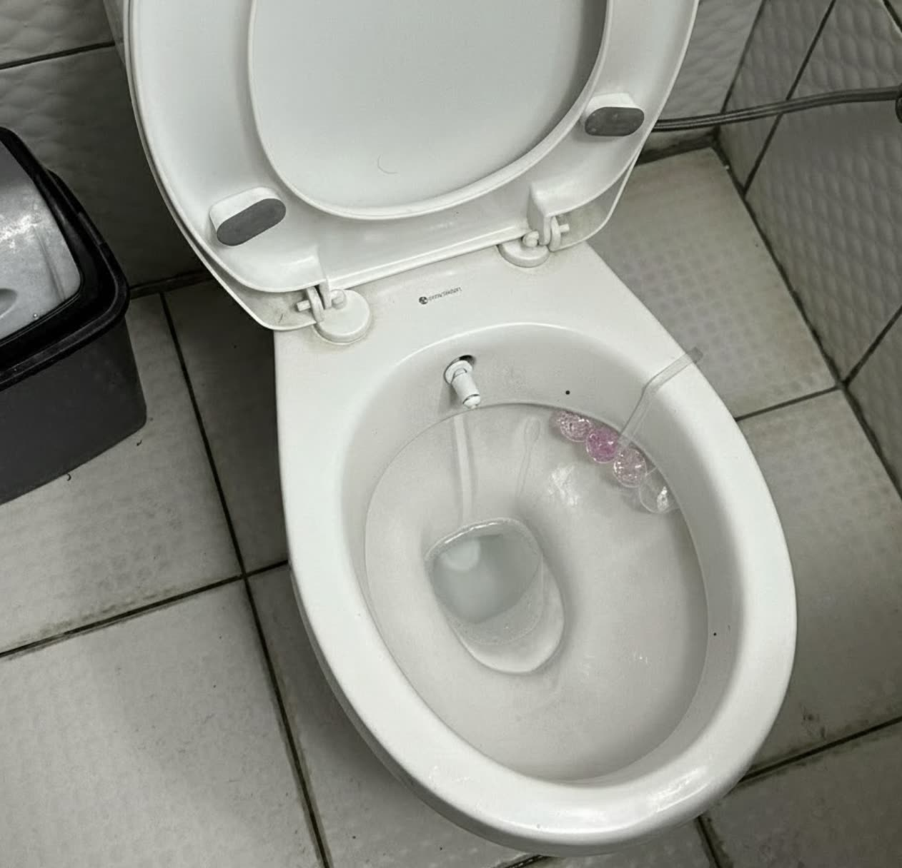
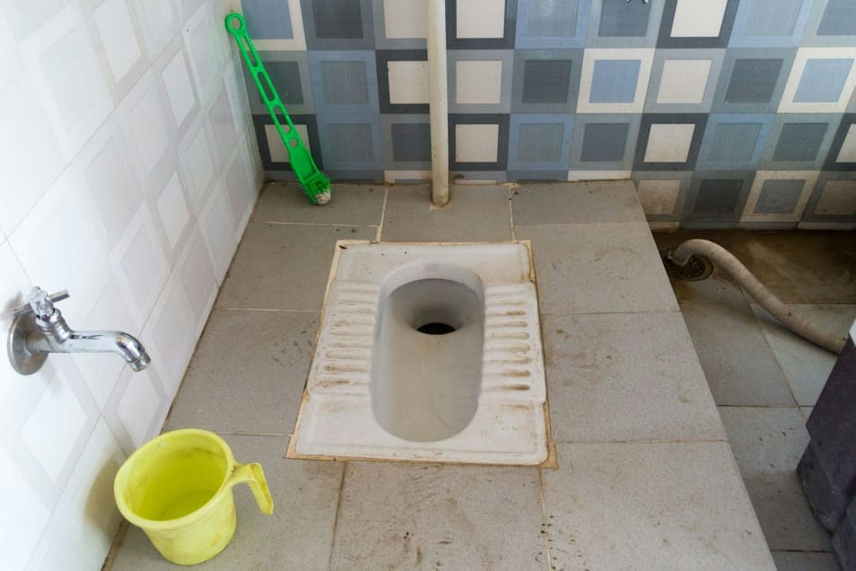
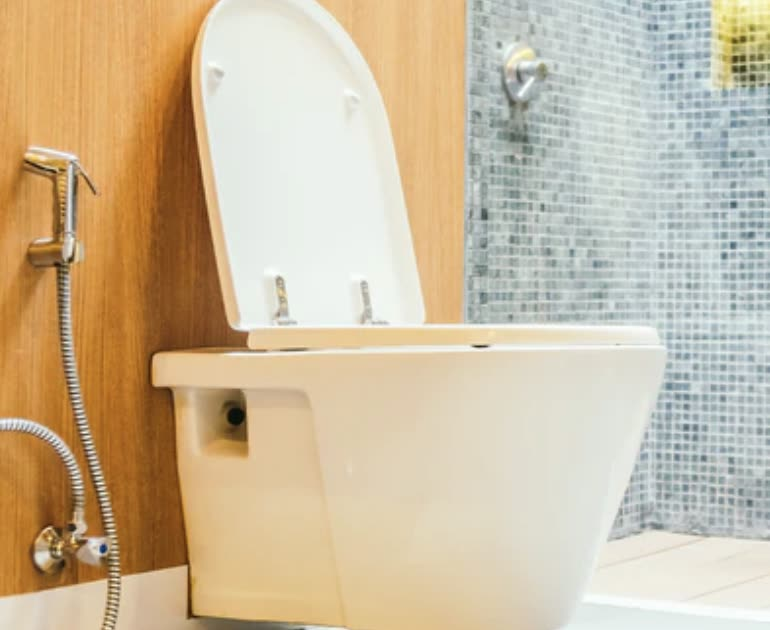

o bidet, where art thou?
being a mercenary knowledge worker meant my projects would take me around the world. a recent undertaking with [redacted] took me across europe, namely germany, switzerland, and turkey.
i was convinced that the sheer sight of historical buildings and monuments would renew my sense of creativity. but after a point, to my untrained eyes, all the chapels and castles looked the same, and after another point, i got bored.
these buildings tell you how people want to be remembered, not how they actually live.
it was only when i stepped into the bathrooms of these different nations that the cultural differences truly hit me. if you want to understand the soul of a civilisation, don't look at its museums or its constitution. look at its toilets.
the protestant dry wipes of switzerland

western regions are colder, and did not have heated water plumbing until much later, making water-based cleaning uncomfortable (due to how cold the water would be). while this is the structural reason, i believe there is a more fundamental cultural reason for non-water cleaning sticking around for so long.
switzerland is a masterclass in high-functioning systems. everything works, everything is on time, and everything is clean. considering the obsession over hygiene, the swiss (and wider anglo-saxon) tradition of wiping with paper feels... counterintuitive.
why would you just wipe yourself with dry paper after relieving yourself?
my hunch is that this is a result of the protestant reformation, specifically the brand of radical reform that john calvin brought to geneva in the mid-16th century.
before calvin was a reformer, he was a lawyer. this is an important detail, as unlike luther, who was an emotional monk, calvin was more systematic. he viewed society as a machine that needed to be optimized for moral output.
thus, calvinism shaped a western mindset where self-control and restraint were the premier virtues, and bodily functions were something to be managed quietly, not indulged or lingered over. this meant that toilets and toilet use were supposed to be quiet, quick, and unassuming, creating a culture of dry discretion.
in this calvinist framework, water-based cleaning is problematic because it is loud, messy, and time-consuming. people can hear the water running outside, the toilet seat and floor ends up being wet, and the feeling of your freshly-washed behind is a constant reminder of the ablution you underwent.
paper, however, is the perfect protestant tool. it is dry, silent, and clinical. it allows the user to feel clean with minimal mess or movements.
the move to toilet paper would then be further driven by the industrial revolution, where the mass production of cheap paper coincided with the rise of indoor plumbing. paper was easy to market, easy to flush, and required zero specialised fixtures.
the german inspector toilet

traveling north from the alps, i entered berlin and encountered flachspüler, or the german shelf toilet. unlike the usual water-bowl toilets, the german design features a flat porcelain ledge. essentially, every time you took a dump, you could peer down and have a clear view of your own excreta.
observing your own poop sounds like a very german thing to do, and i remember sitting and wondering what could have led to this implementation.
19th century prussia (of which modern germany was a part) was one of the first modern states to view the health of its citizens as a matter of national security. this created a culture of rigorous self-monitoring, and in a time where lab tests did not exist, the primary diagnostic tool was visual inspection of your own bodily expulsions. the shelf toilet turned every citizen into their own health data collector.
i also learnt that german culture is built on sachlichkeit, or radical objectivity. after the chaos of WWI, germans reinforced sachlichkeit as neue sachlichkeit (new objectivity), a rejection of romanticism, seeking to see things exactly as they were.
hence, in germany, avoiding the sight of your own waste is seen as a form of intellectual weakness or irrationality, and mirrors the broader commitment to sachlichkeit, the german belief that reality, no matter how yellow or stinky, must be faced head-on to be understood.
the french bidet

while i did not go to france, i briefly stayed at a french-themed apartment owned by an elderly parisian man during my time in switzerland. so, what is the french bidet? why is it called that? why does it exist as an apparatus separate from the toilet?
for starters, the word bidet is the french word for pony, which is a direct clue to its origin.
the bidet was developed in the late 17th century by french furniture makers for the aristocracy. at the time, the elite spent a significant amount of their lives on horseback.
long days in the saddle caused excessive sweat, chafing, and saddle sores around the thighs. the bidet was designed as a specialised basin that one would straddle, just like a pony, to perform a localised wash.
unlike the protestant treatment of the body, the french aristocracy viewed the body with a degree of pragmatic hedonism. full-body bathing was rare and medically discouraged, so the bidet allowed for the targeted cleaning of just the bits that mattered most for comfort and social interaction.
this made the bidet the primary tool for basic and sexual hygiene (hence operated as an apparatus separate from the toilet), and was often used as a rudimentary form of contraception.
unfortunately, as globalism picked up after the world wars, france slowly began to abandon its own invention. american and british soldiers in WWII associated the french bidet with french brothels, which created and reinforced the negative perception that water-based cleaning is decadent or sinful.
thus, the standalone bidet disappeared from modern french apartments, only to be found in the apartments of old eccentric gentlemen who try hard to stick to their french roots.
the eurasian jets of turkey

leaving the european mainland, i stopped in istanbul. turkey is the only country that exists across two continents, and turkish toilets reflect this unique hybrid euro-asian culture.
unlike the regular western toilet, the turkish toilet has an integrated bidet jet (referred to as taharet musluğu). it is a fixed nozzle built directly into the porcelain of the toilet bowl that gives a controlled, continuous stream of water.
practising muslims are required to keep themselves clean without physically touching their bodily impurities. the turkish toilet is built on the logic of tahara (ritual purity). in islamic practice (fiqh), cleansing after defecation (istinja) is a ritual that enforces the purity required for prayers.
this design aligns with the islamic principle of avoiding direct contamination (najas). the integrated jet allows for thorough cleansing without the need for physical contact with the body or waste.
but why is this so standardised in turkey?
the ottoman empire, which preceded the modern turkish republic, was an islamic state, with sunni islam as the state religion. the ottomans were obsessed with public baths (hammams) and water infrastructure because cleanliness was a core tenet of islam.
islam's obsession with washing wasn't just a meaningless ritual. in the medieval world, plagues were the ultimate destroyer of empires. thus, by making people wash five times a day, the religion effectively mandated a level of public sanitation that protected its population from the diseases that were ravaging europe.
for that fixed nozzle to hit the target every time, the plumbing has to be standardised and the water pressure must be predictable. urban centres like istanbul have insanely good public infrastructure because the concept of water-as-purity is baked into their civic DNA.
the jugaadu indian hand faucet
my project with [redacted] ends in a week, and i will be back in india soon.
i miss the indian toilet. after experiencing toilets around europe, i realised how little i understand our desi commode.
the traditional indian toilet is a squatting pan, usually coupled with a plastic bucket and a mug (or a lota). this was the original low-bandwidth toilet solution; it didn't require high-pressure plumbing or complex valves, gravity and having a dexterous left hand were the only requirements.

but as india urbanised, we upgraded to the western commode. in doing so, we encountered the dry versus wet problem - the western toilet is built for dry cleaning, but we are a wet culture.
the turkish jet, while elegant, would be inefficient in india. indian plumbing is nowhere as reliable as turkey's. hence, a fixed nozzle here would either barely trickle, or blast you with the force of a fire hose depending on your apartment's tank capacity.
this is what makes the health faucet a masterpiece of secular engineering.

india is a melting pot of cultures. islam requires a hands-off flow to avoid physical contamination (najas), while many hindu traditions still rely on manual dexterity using the left hand. the detachable spray head is an inclusive design; it gives everyone a way of practicing their preferred method.
the faucet is also a testament to our jugaadu attitude. plastic hand faucets are cheap, easy to replace, and doubles up as a tool for washing feet after a dusty commute or cleaning the bathroom floor.
conclusion
it is amusing how the porcelain we sit on reveals more about our gods and our governments than any museum ever could.
truly, the pipes don't lie.
← flush yourself back home